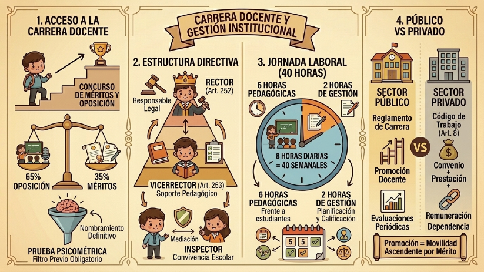

La carrera educativa pública (Art. 193) no comienza con una simple contratación; inicia formalmente cuando el docente obtiene su nombramiento definitivo tras superar el concurso de méritos y oposición. A diferencia del sector privado, donde la relación laboral se rige por el Código de Trabajo (Art. 8, basado en convenio, servicios lícitos, remuneración y dependencia), en el sector público la selección es un proceso altamente estandarizado.

El Proceso de Selección: Rigor Técnico
Para ser candidato apto, el aspirante debe superar un filtro estricto: inscripción centralizada, una Prueba Psicométrica (que evalúa razonamiento y perfil, Art. 198) y pruebas estandarizadas de conocimientos (Art. 175). La nota final se divide en dos fases (Art. 213): la Oposición, que pesa el 65% (clase demostrativa, entrevista y pruebas de conocimientos, Art. 214) y los Méritos, que equivalen al 35% (títulos, publicaciones, experiencia y capacitación).
Autoridades y Jornada Laboral
La gestión institucional recae en un equipo directivo definido por ley (Art. 246): Rector/Director, Vicerrector/Subdirector e Inspector General. Cada uno tiene roles definidos: el Rector es el responsable de cumplir la ley y supervisar la evaluación (Art. 252); el Vicerrector es el soporte pedagógico de las juntas de grado (Art. 253); y el Inspector General es el garante de la convivencia y la resolución de conflictos (Art. 256). Finalmente, la jornada laboral docente (Art. 192) está estructurada en 40 horas semanales: 6 horas diarias de clase y 2 horas dedicadas a tareas administrativas, planificación y creación de material didáctico.